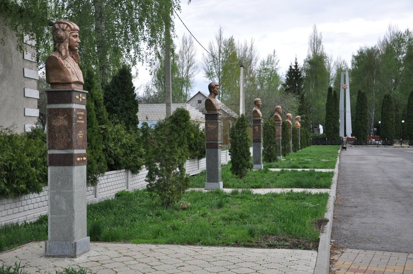

Места нашей области, посвящённые Великой Победе
 Домой
Домой
Аллея Славы (Волово)
Место установки: в центре села Волово, рядом со "Стелой Победы".
В состав аллеи Славы входят шесть бюстов уроженцев Воловской земли. Это: Бачурин Федор Игнатьевич, Герой Советского Союза (бюст установлен в 2008 г.) Солдатов Иван Алексеевич, Герой Советского Союза (бюст установлен в 2008 г.) Чернов Василий Тихонович, полный кавалер орденов Славы (бюст установлен в 2008 г.) Ермаков Демьян Петрович, полный кавалер орденов Славы (бюст установлен в 2009 г.) Трубников Кузьма Петрович, генерал-полковник, полный Георгиевский кавалер (бюст установлен в 2010 г.) Печерских Михаил Федорович, Герой Советского Союза (бюст установлен в 2013 г.).
Изображения:
